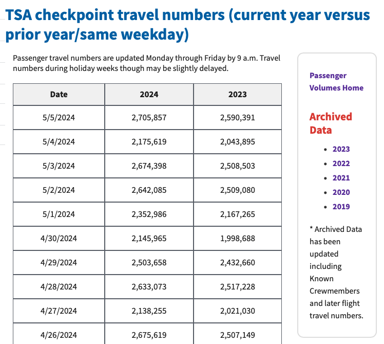

2024-05-07
A couple years back, I wrote about how to pull TSA checkpoint data from tsa.gov. I mostly focused on the helpful read_html() function from pandas, and I didn't go into detail on the additional code needed to tidy the data, which is substantial given the way the data was set-up.
I had been planning to post an updated/simplified version of the tidying code in pandas, Polars and DuckDB, but just recently I noticed that the TSA updated their site and simplified the way they're storing this data! This essentially eliminates the need for almost all of the tidying code.
Now the prior years are each stored on their own respective page and have a simple table of all their daily values.
The main page now just shows the current and prior year, with the data matched on the same day of week. This is how the data used to be shown, but it included all years back to 2019. This meant that we had to derive the actual date of each historical number and it meant that we typically were missing a handful of days from history.
Pulling and cleaning the data is now just a matter of pulling the table from each page, appending each year together, and ensuring the date is formatted properly. The code is below, and the latest TSA data is available here.